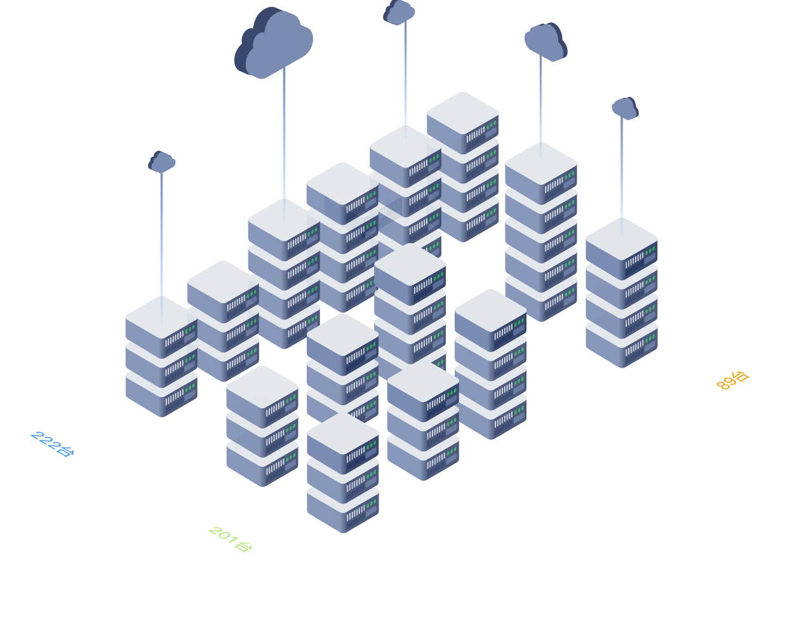

服务器总体情况
总计 527台
已使用 422台
使用率 80.1%
灯塔--党建在线综合管理服务云平台的建设，包括互联网区和VPN虚拟专网区（含节点区）,目前所有服务器都在安全稳定的运行。
互联网区规划服务器222台，主要承担社会公众服务的内容，如党建和组织工作宣传等；
VPN虚拟专网区规划服务器290台，其中节点区201台,承担非涉密的组织工作业务办理如发展党员网上记实、山东e支部等，为党员管理提供基础支撑。


安全运营时间
00天
00时
00分
00秒